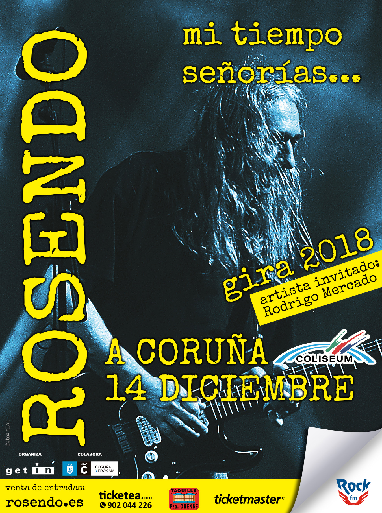

A Coruña · Coliseum
14 de diciembre de 2018
Una noche que marcó sello en Galicia: Rosendo encendió el Coliseum con su rock callejero, visceral y directo al corazón. Fue un concierto íntimo pero eléctrico, un lugar donde cada riff y cada frase parecían un diálogo entre el maestro y su público, abrazo de despedida antes de las ciudades más grandes.